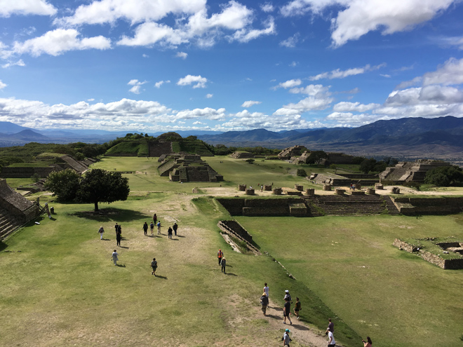
Monte Albán was first occupied around 500 BC, probably by Zapotecs. Its 1,300 year history is split into five archeological phases. It reached its apex between AD 300 and 700 but was abandoned long before the Spanish arrived in the 1520s. Many buildings here were plastered and painted red while nearly 170 underground tombs have been found, some of them with elaborate and decorated with frescoes, though none of these are regularly open to visitors today.
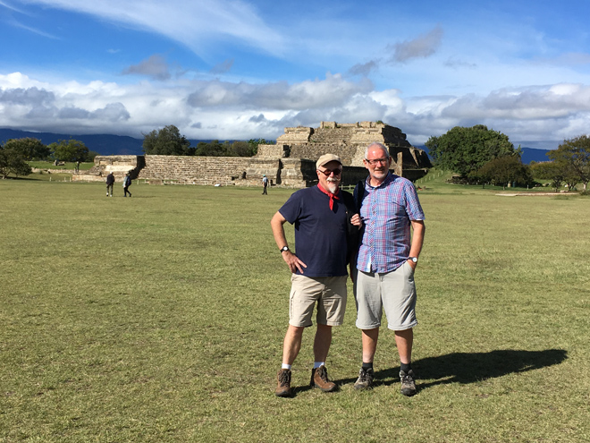
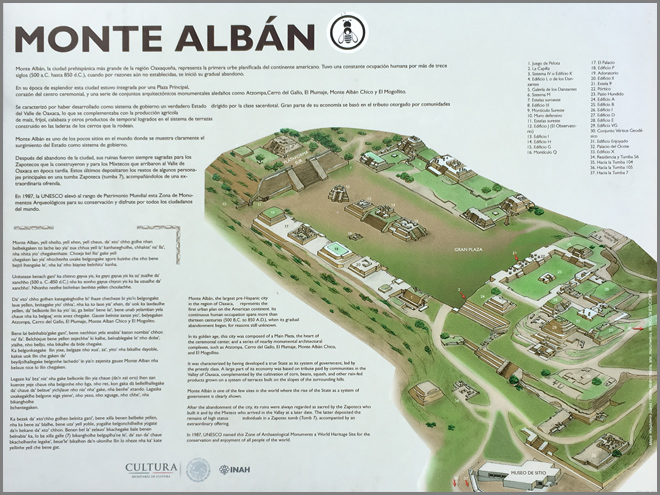
The Juego de Pelota (ball court) was constructed about 100 BC. The terraces were part of the playing area and not seats for spectators. It's thought they were covered with a thick coating of lime so that the ball would roll down them.
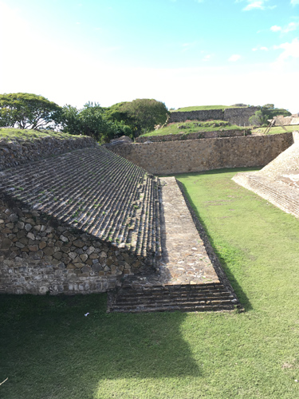
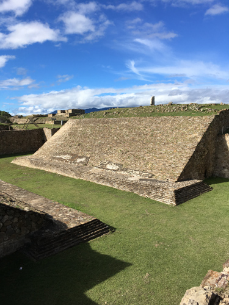
The Gran Plaza is about 300m long and 200m wide and is the heart of Monte Albán. Some of its structures were temples, others were elite residential quarters.
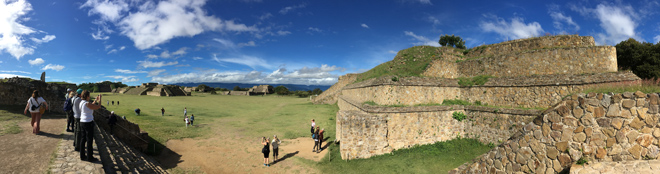
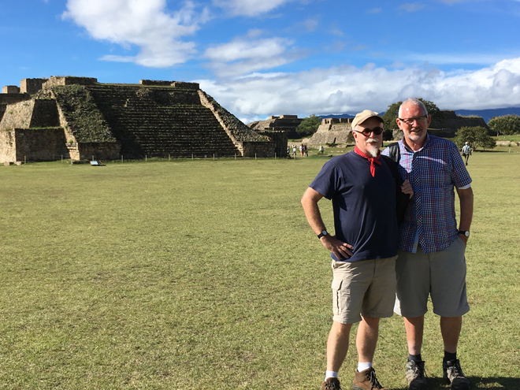
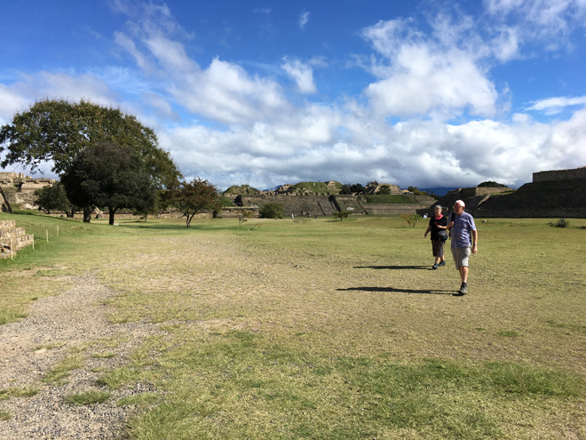
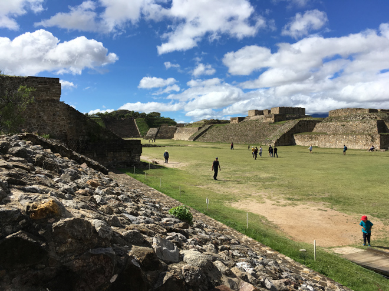
The Edificio de los Danzantes houses carvings made between 500 and 100 BC and depict naked men, thought to be sacrified leaders of conquered neighbouring towns. The Danzantes generally have open mouths (sometimes downturned in Olmec style) and closed eyes. Some have blood flowing where they have been disembowelled.
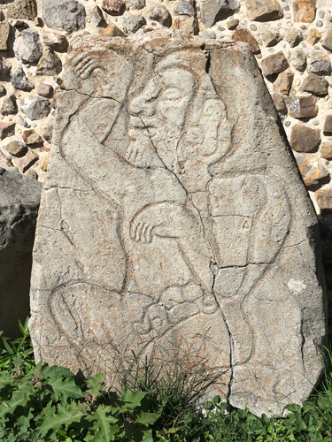
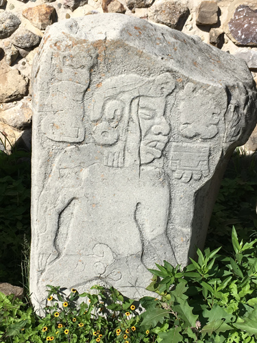
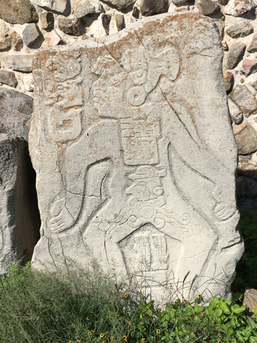
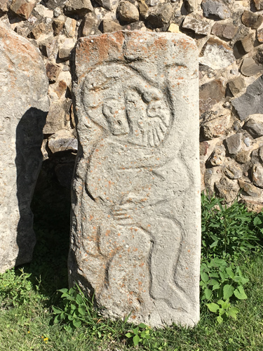
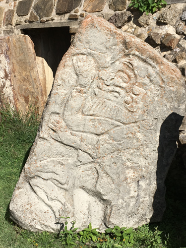
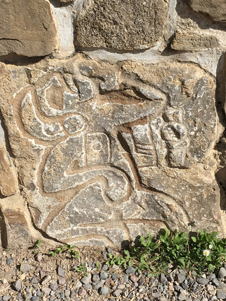
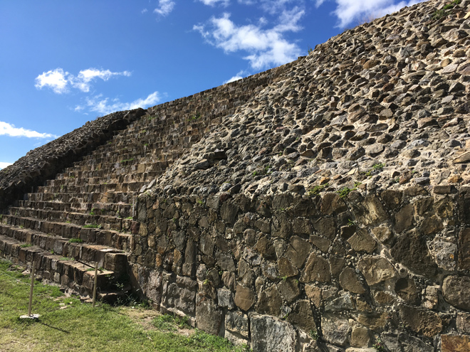
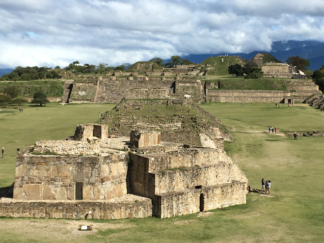
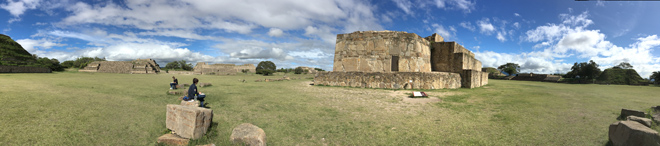
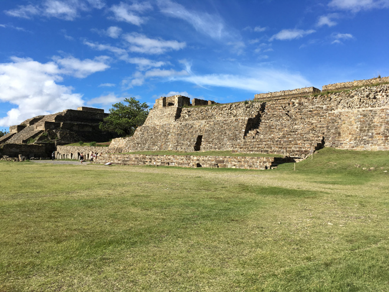
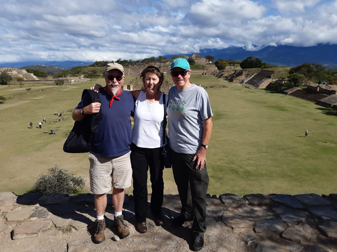
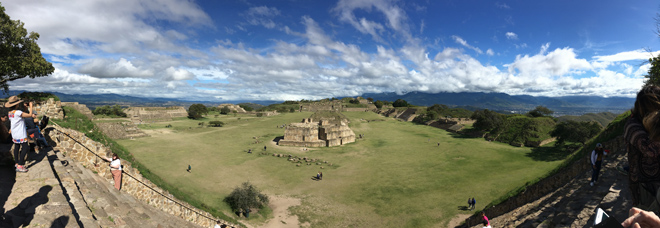
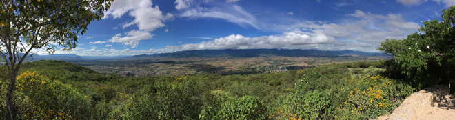
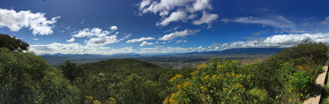
From the high spot on the Moniculo Sur we could enjoy fabulous views over the surrounding valleys and down to Oaxaca itself. I caught sight of what I thought was a condor - but it turned out to be a black vulture.
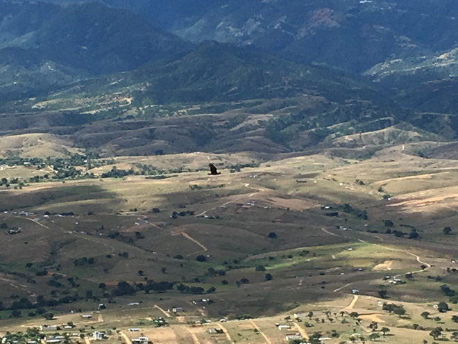
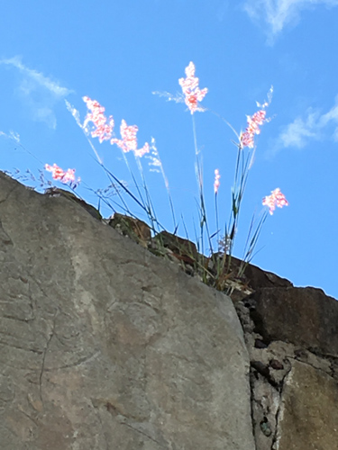
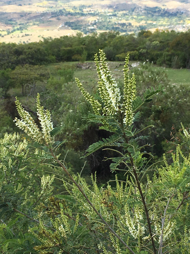
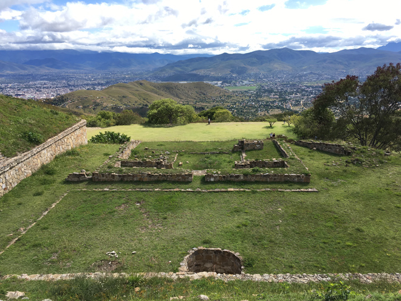
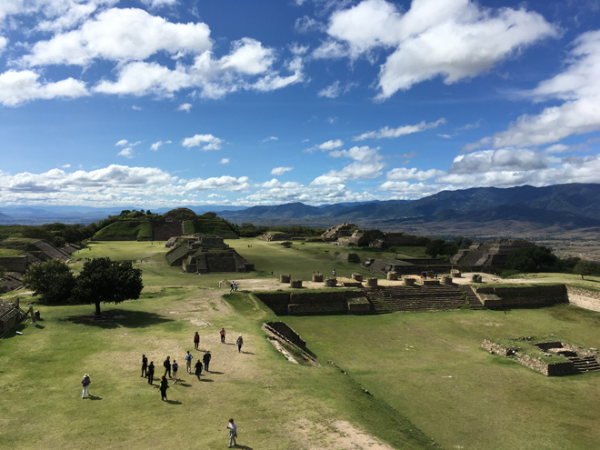
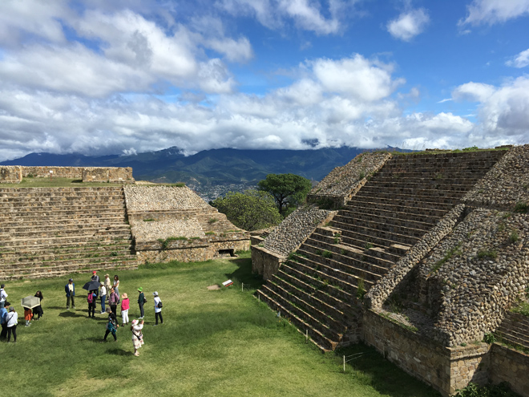
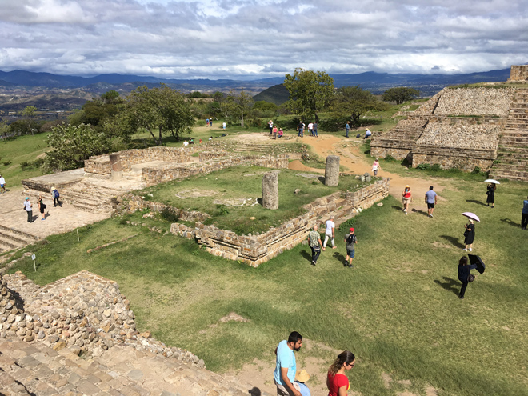
A small on-site museum had a couple of exhibits but none were explained clearly so I had no idea what they were - nor anything about the photographs of ancient teeth and jawbones.
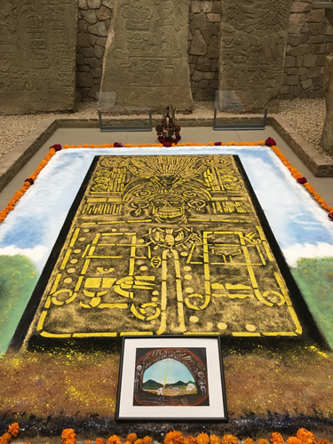
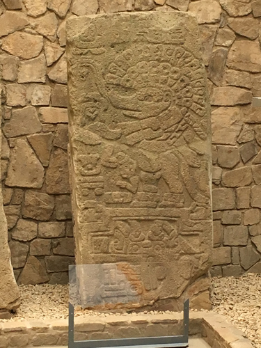
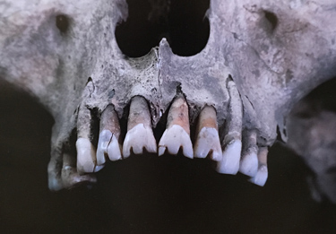
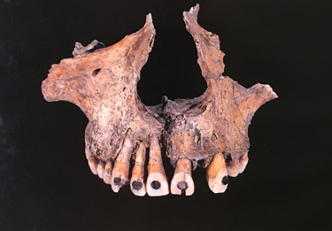
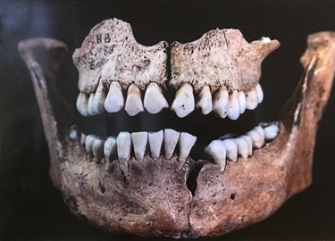
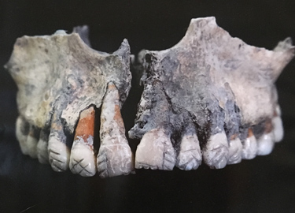